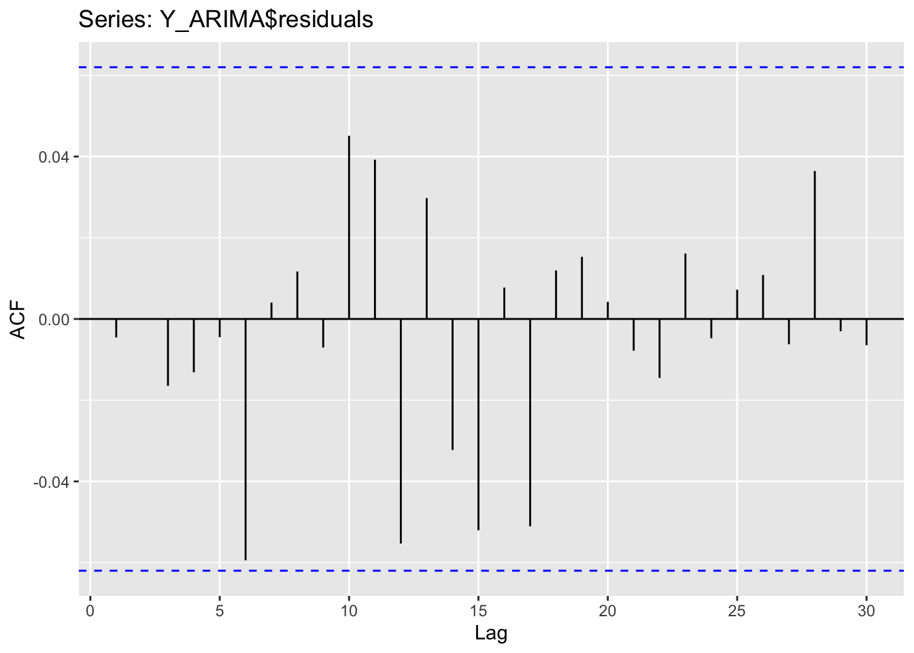
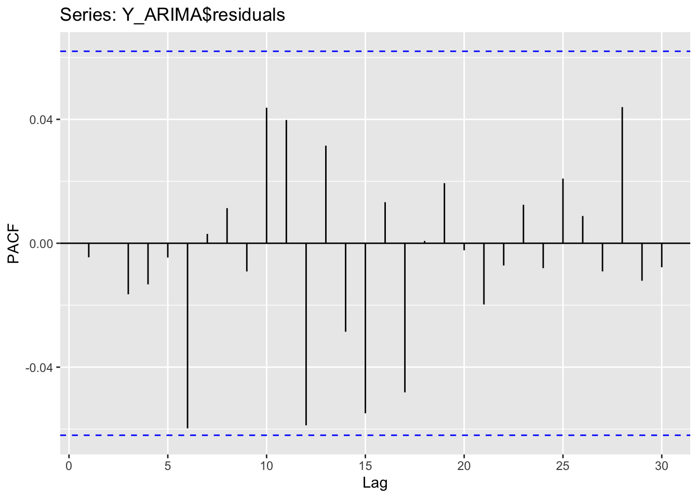
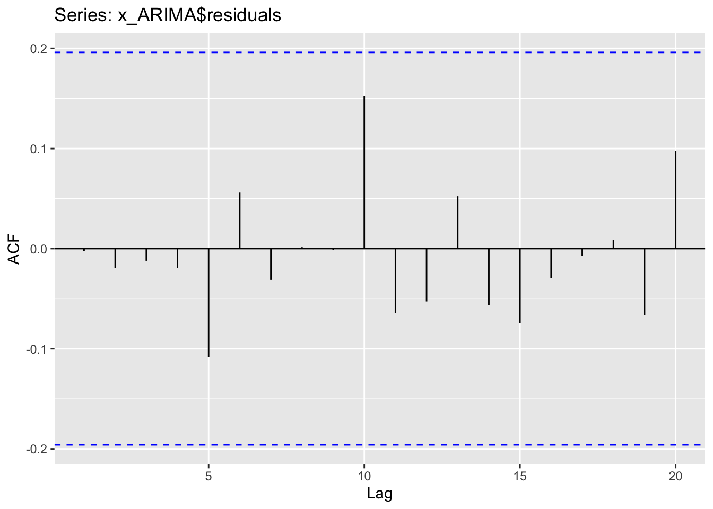
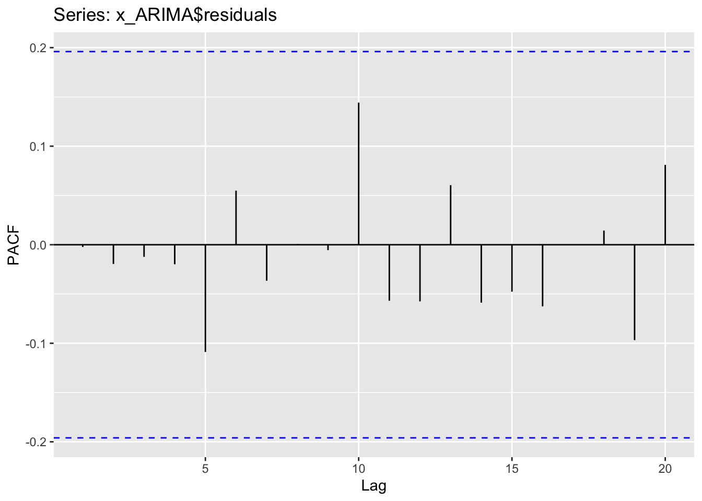
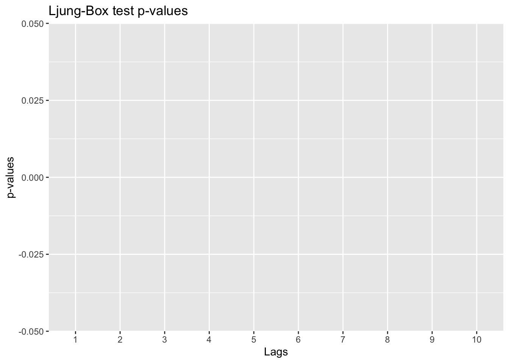
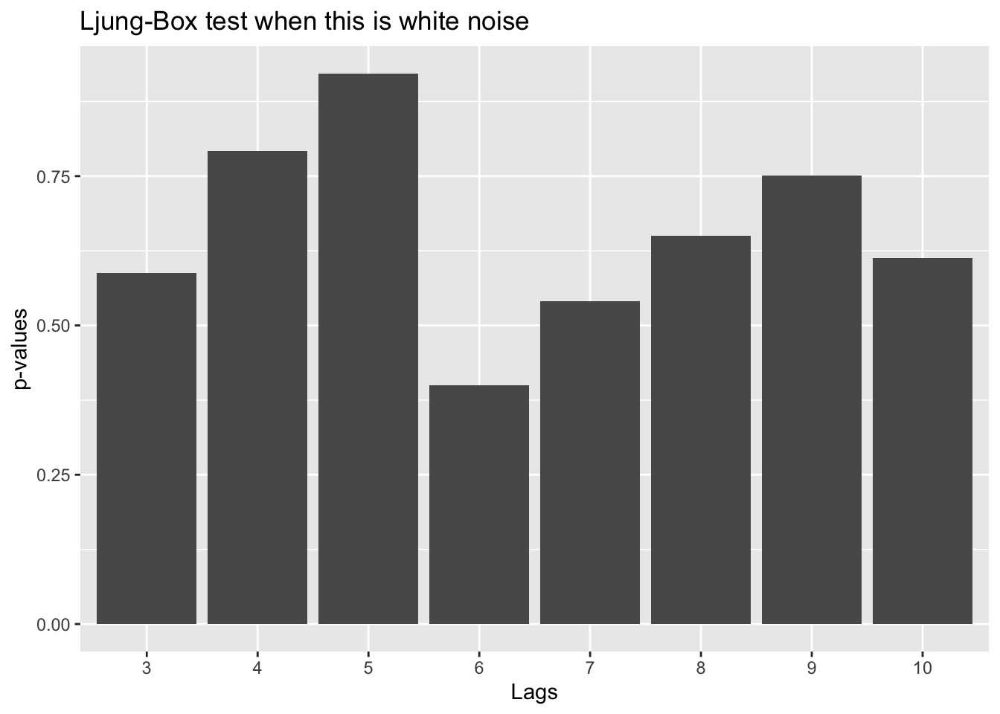

Code
library(tidyverse)
library(tseries)
library(forecast)
Y <- read.csv("https://raw.githubusercontent.com/sjsimmo2/TimeSeries/master/ar2.csv")
x <- read.csv("https://raw.githubusercontent.com/sjsimmo2/TimeSeries/master/MA2.csv")Yang Chen
September 7, 2023
September 19, 2023
Forecast a series based solely on the past values of \(Y_t\). We are trying to model the lags of our Y terms.
We are focusing on the most basic case where there is only one lag value of \(Y_t\)–the AR(1) model. In daily data, today depends on yesterday, yesterday depends on the day before.
\[ \begin{align*} Y_t &= \omega + \phi Y_{t-1} + e_t \\ Y_{t-1} &= \omega + \phi Y_{t-2} + e_{t-1} \\ Y_{t-2} &= \omega + \phi Y_{t-3} + e_{t-2} \end{align*} \]
The relationship goes back in time. The model assumes that the correlation structure exists throughout the whole series.
The \(\omega\) in the AR model refers to the average of the series whereas in the Random Walk equation the \(\omega\) refers to drift. Whenever you are not taking a difference, the model will try to fit around the mean.
ESMs are weighting the previous information with the average model. AR(1) only takes into account the previous value. AR(1) uses a restricted maximum likelihood estimator to estimate the weights.
ACF decreases exponentially as the number of lags increases. However, the PACF has a significant spike at the first lag, followed by nothing after.
\(|\phi| < 1\) has to be true for stationarity. Overall, the effect of shocks last over a long period of time. However, the effect of shocks that happened long ago has little effect on the present IF the value for \(|\phi| < 1\). Stationarity–the dependence of previous observations declines over time.
If we have a random walk then our correlation graphs are useless in determining correlation structure. See Figure 3 for an example of a Random Walk ACF.
A time series that is a linear function of 2 past values plus error is an AR process of order 2:
\[ Y_t = \omega + \phi_1Y_{t-1} + \phi_2Y_{t-2} + e_t \]
AR(2) models have a pattern in PACF plots for when it comes to stationarity (2 spikes). The effect of shocks that happened long ago has little effect on the present if the value for \(\left| \phi_1 + \phi_2 \right| < 1\). We have more restrictions on our \(\phi\) weights.
Time series that is a linear function of \(p\) past values plus error is called AR process or order \(p\).
\[ Y_t = \omega + \phi_1Y_{t-1} + \phi_2Y_{t-2} + \cdots + \phi_pY_{t-p} + e_t \]
If the model is just an AR model, then the PACF has significant spikes at hte lags up to \(p\) lags, followed by nothing after.
There are more complicated restrictions on \(\phi_i\)’s. If your software warns you about convergence issues or warnings, then you have to try a different model.


Notice that we are doing the correlation functions on the residuals. If you have modeled the correlation structure, then you should only have small amounts of noise left. Residual analysis gives us an idea of whether we have more modeling to do: if large spikes in our residuals exist, then we have not modeled all the autocorrelation.
The coefficients from AR models are not very interpretable. If you are reporting to a client you would just say that you fit an AR(p) model. Note that we can still overfit in ARMA models. We prefer parsimonious, simpler models over complicated models that capture every bit of autocorrelation.
Moving average models are modeling lags of the error terms–the past error values.
\[ Y_t = \omega + e_t - \theta e_{t-1} \]
This is true for all observations (each observation is dependent on the error from the previous observation). Therefore, in an MA(1) model, individual shocks only last for a short time.
In the MA model, we do not have the same restrictions as AR models (but do want them to be invertible).
The ACF has a significant spike at the first lag, followed by nothing after.
PACF decreases exponentially as the number of lags increases. For \(q\) > 1, however, these patterns do not apply as the model becomes more complicated.
Time series that is a linear function of \(q\) past errors is a moving average process of order \(q\).
\[ Y_t = \omega + e_t - \theta_1e_{t-1} - \theta_2e_{t-2} - \cdots - \theta_qe_{t-q} \]
ACF has significant spikes at lags up to lag \(q\), followed by nothing after.
We can plot the ACF and PACF for a simulated MA(2) model:
In a purely MA(2) model, we see the two spikes in the first two lags in the ACF plot.
Note that in ggplot the plots have lag 0 truncated since it does not provide us any valuable information.
Series: x_ts
ARIMA(0,0,2) with non-zero mean
Coefficients:
ma1 ma2 mean
-0.2460 0.4772 0.0250
s.e. 0.0857 0.0923 0.0567
sigma^2 = 0.2207: log likelihood = -65.1
AIC=138.2 AICc=138.63 BIC=148.62
Training set error measures:
ME RMSE MAE MPE MAPE MASE
Training set 0.0008828966 0.4627151 0.3808289 74.99115 114.4434 0.5453401
ACF1
Training set -0.002299708

We don’t have any large spikes in our residual plots so our model effectively captures the autocorrelation structure.
Note that we can compare the AIC/BIC between AR, MA, or ARIMA models but we cannot compare them to the metrics given by ESM models as there may be different ways the metrics are being calculated across different algorithms.
PACF is useful for identifying the order of AR terms in a time series model. PACF measures the direct relationship between the current value at time \(t\) and a value at time \(t - k\) without the influence of other lags.
However, MA processes do not exhibit a direct relationship between the current observations and its past values. MA processes involve linear combinations of error terms with coefficients applied to past error terms. This makes it difficult to assess the relationship using PACF because the influence of past values is not straightforward.
Instead, we use ACF to identify the order of MA terms. If we see a signficant spike at lag \(k\), then we may want to consider adding in \(q = k\) terms to the MA portion of our model.
White noise is essentially the independent errors that we are left with after modeling the signal.
White noise time series have errors that have the following characteristics:
Goal of modeling time series to to be left with white noise residuals in the time series. If residuals have a “significant” dependence structure, then we can still continue modeling.
Ljung-Box can be applied to original data or to the residuals after fitting a model.
\(H_0:\) Series has no autocorrelation.
\(H_a:\) One or more autocorrelations up to lag \(m\) are not zero.
Essentially, rejecting our null hypothesis means that more modeling should be done. When looking at nonseasonal data, we typically go back around 10 lags.
\[ \chi_m^2 = n(n + 2) \sum_{k=1}^{m} \frac{\beta_k^2}{n - k} \]
For Box.test, there is a parameter fitdf that you want to specify. The degrees of freedom change depending on what kind of vector we are trying to test. If fitdf = 0 then we are specifying the test on the original time series data. If fitdf = p + q (where p is number of AR terms and q is number of MA terms) then we are specifying the test on the residuals of our fitted model.
Looking at original data first:
index1 <- seq(1, 10)
white_lb <- rep(NA, 10)
for (i in 1:10) {
white_lb[i] <- Box.test(Y, lag = i, type = "Ljung-Box", fitdf = 0)$p.value
}
white_dat <- data.frame(cbind(white_lb, index1))
colnames(white_dat) <- c("pvalues", "Lag")
ggplot(white_dat, aes(x = factor(Lag), y = pvalues)) +
geom_col() +
labs(title = "Ljung-Box test p-values", x = "Lags", y = "p-values")
Looking at the fitted model:
Y_ARIMA <- Arima(Y, order = c(2, 0, 0))
white_lb <- rep(NA, 10)
for (i in 3:10) {
white_lb[i] <- Box.test(Y_ARIMA$residuals, lag = i, type = "Ljung-Box", fitdf = 2)$p.value
}
# We index our lags at the p+q+1 lag.
# For an AR(2), we index at 3
white_dat <- data.frame(cbind(white_lb[3:10], index1[3:10]))
colnames(white_dat) <- c("pvalues", "Lag")
ggplot(white_dat, aes(x = factor(Lag), y = pvalues)) +
geom_col() +
labs(title = "Ljung-Box test when this is white noise", x = "Lags", y = "p-values")
Note that you have to start your tests on the next lag term than the number of lags in your model. In this example we are using AR(2) so our tests start on lag 3. In general, the Ljung-Box autocorrelation terms are undefined up to \(p + q\) terms.